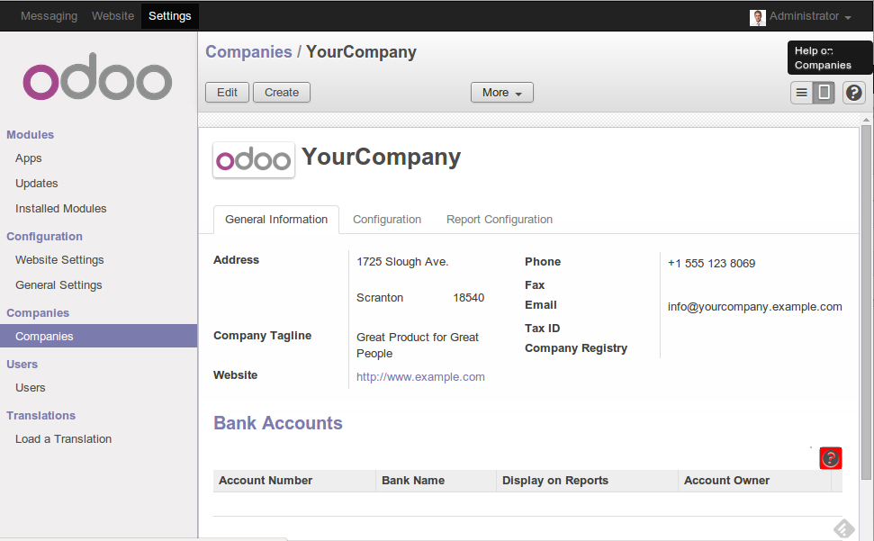
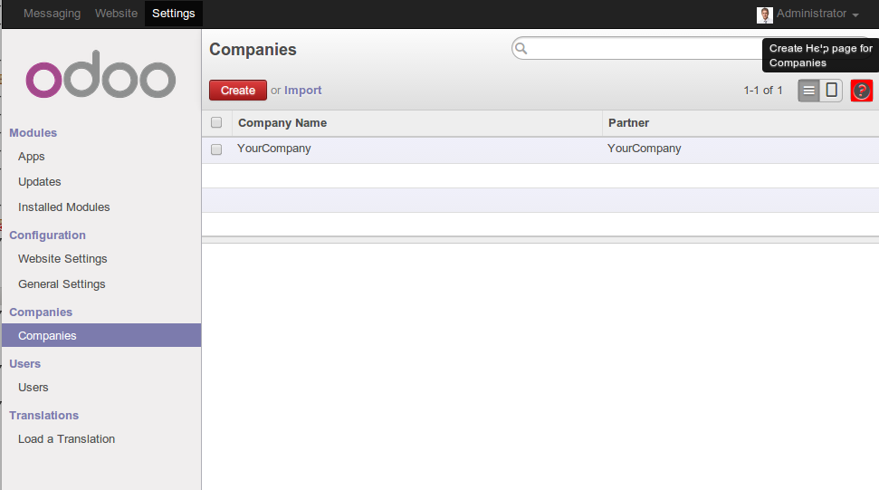

<div class="document">
    <div class="section" id="help-online">
        <h1>Help Online</h1>
        <p>This module allows the creation of an online help available from the lists and forms in Odoo.</p>
        <p>When loading a view, the module generates a button allowing access to an help
           page for the related model if the page exists and the user is member of the
           group 'Help reader'.</p>
         
         <p>If the page doesn't exist and the user is member of
           the group 'Help writer', the module generate a button allowing the creation an
           help page.</p>
        
        <p>The help pages are created and managed via the website Module.</p>
        <br/>
        <p>If you want to export your work, you simply have to use the export wizard through the settings menu.</p>
    </div>
</div>
